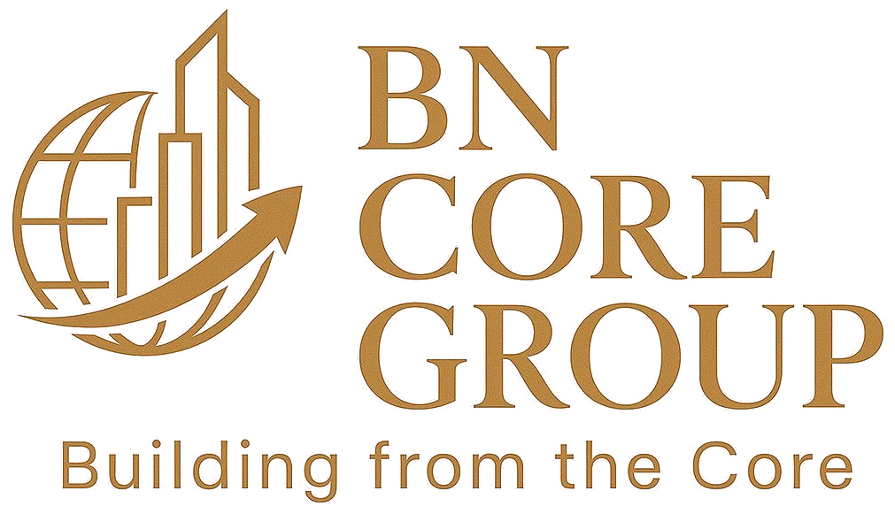

BN CORE GROUP mobilise des ingénieurs et techniciens qualifiés pour vos missions de commissioning et d'O&M sur des systèmes de stockage d'énergie par batterie (BESS) à grande échelle — en intervention directe, ou en renfort de vos propres équipes, sous votre supervision. Actifs en Europe, sous une obligation de moyens clairement assumée.

BN CORE GROUP est un partenaire spécialisé en Technical Field Services pour les projets de stockage d'énergie par batterie (BESS) à grande échelle (utility-scale), sur des missions de commissioning et d'exploitation-maintenance (O&M). Nous intervenons aujourd'hui sur le marché européen.
Notre équipe est déjà intervenue sur des projets BESS de grande envergure pour de grands acteurs du secteur. Les engagements de confidentialité liés à ces projets ne nous permettent pas de citer de noms — mais cette expérience façonne notre façon de travailler sur chaque nouveau chantier.
Une extension de notre intervention vers le Moyen-Orient et l'Asie du Sud est envisagée à moyen terme — un développement en projet, non un marché déjà servi à ce jour.
Nous nous engageons sur ce que nous maîtrisons — des équipes qualifiées, une méthode rigoureuse, une réponse rapide — et non sur un résultat garanti, par nature hors de notre seul contrôle sur un chantier partagé.
Procédures de mobilisation et d'intervention structurées, tracées et documentées.
Un point de contact unique et une mobilisation coordonnée sur site.
Application des procédures HSE en vigueur sur chaque site d'intervention.
Une équipe focalisée exclusivement sur les technologies de stockage par batterie.
Field Services et Workforce Deployment, au service de vos projets de commissioning et d'O&M.
Intervention terrain sur les chantiers BESS : commissioning, tests, maintenance préventive et corrective, réparation et soudure de conteneurs.
Découvrir → 02Renfort d'équipes techniques qualifiées, mises à disposition de vos projets sous votre supervision.
Découvrir →